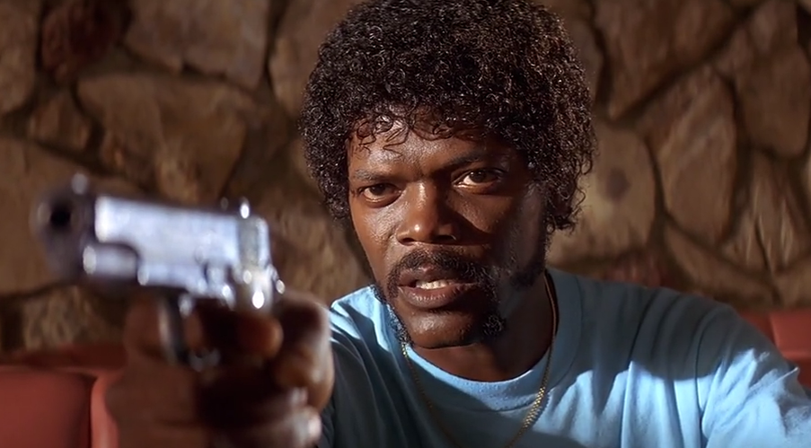
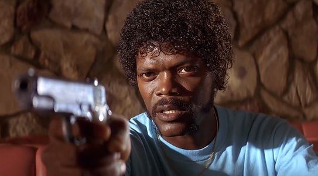
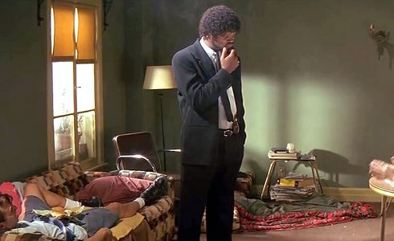
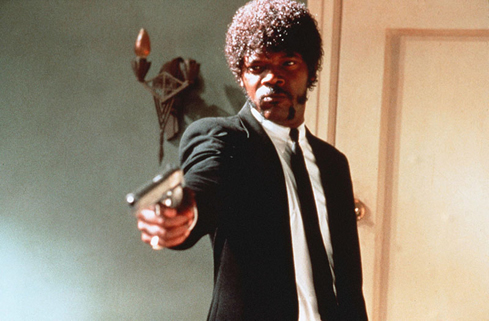
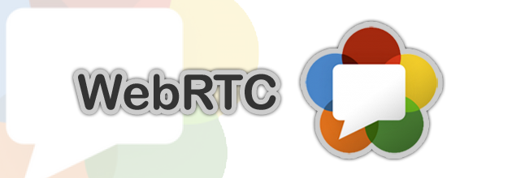
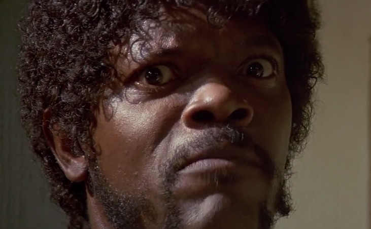

WebRTC
Real Time Collaboration with JS & HTML5
Om Shankar
Amazon, @WalmartLabs, Adobe Systems
Loves the Web; believes moving it forward
JavaScript freak, HTML5 Aficionado
Usually, press right key. When bottom arrow glows, press down arrow key

Why you speak HTML5 & WebRTC in JSfoo, eh?
What has JavaScript to do with WebRTC?

If something can be done in JavaScript,
it will be eventually done in JavaScript
- Anon.
HTML5 is meaningles without JavaScript APIs
All WebRTC features require APIs available in JS only
Christian Heilmann, the HTML5 Guru, is speaking at JSfoo
I just want Internet, What the hell is HTML5
Web as an Application

Don't you want to Communicate?
Export, Share, Store, Edit?
Record & Play videos and songs?
Drag Drop, 3D, Flexible layouts, Create and Draw?

What are these?
You tell me! You tell me right now!!
HTML5 Features
Semantics,
Offline & Storage,
Multimedia,
3D & Graphics (WebGL, SVG),
CSS3
(yes that's part of HTML5 Spec),
Performance & Integration (CORS, AJAX2, WebWorkers),
Connectivity (Real-time, WebSockets & Push),
, Device Acces (Geolocation, Tilt, etc.)
What is WebRTC

Web Real Time Communication:
An HTML5 Featureset enabling Real Time P2P communication ...
natively in Browsers - without any plugins.
with support for data Sharing, Audio and Video Chat, etc.
API Standards and Specs being maintained by W3C.
Where is JavaScript?
- 3 main actions required for WebRTC on Client Side (Browser) are performed by JavaScript:
- Acquiring the Video and Audio Streams
getUserMediareturningMediaStream(JS Object pointing a live stream being fed to it) - Sharing Streams with peers - AKA Communicating !
RTCPeerConnectionRTCIceCandidate - Sharing data with peers
RTCDataChannel
Acquiring Video and Audio
getUserMedia
var constraints = {video: true, audio: true };
navigator.getUserMedia(constraints, successCallback, errorCallback);
function successCallback(stream) {
var video = document.querySelector("video");
video.src = window.URL.createObjectURL(stream);
}
function errorCallback(error) {
alert("Error: ", error);
}
-
constraints- Must for getusermedia, specifies Media type, resolution, etc. -
video- An HTML5 DOM element capable of playing live feed
Communicating Streams
RTCPeerconnection
var peerCon = new window.RTCPeerConnection(configuration);
peerCon.addStream(localStream); // got from getUserMedia
peerCon.onaddstream = function(e) {
...
peerCon.addIceCandidate(candidate);
peerCon.onicecandidate = function(e) {
...
peerCon.setLocalDescription(description);
peerCon.setRemoteDescription(new RTCSessionDescription(msg.data));
peerCon.createOffer(IceCandidate)
peerCon.createAnswer(...)
-
IceCandidate- ICE - f/w to allow peers to communicate behind Firewalls, explained later. -
RTCSessionDescription- Description of multimedia content, following SDP, explained later.
Communicating Data
RTCDataChannel
var peerCon = new window.RTCPeerConnection(
servers, {
optional: [{ RtpDataChannels: true }]
}
);
peerCon.ondatachannel = function(event) {
receiverChannel = event.channel;
receiverChannel.onmessage = function(event){
receiveDOMElement.innerHTML = event.data;
};
};
XmitterChannel = pc.createDataChannel("sendDataChannel", {reliable: false});
XmitterChannel.send('Hello WebRTC');
-
RtpDataChannels: true- To enable arbitrary data via the same RTCPeerConnection. -
onmessage, etc. - Same API as WebSockets.
WebRTC & the Web
Architecture


I don't want to see that image again!
WebRTC: No Firewalls
STUN and TURN not needed
WebRTC: Behind NAT Firewall
Solution 1: Use STUN
WebRTC: STUN Fails
Solution 2: Use TURN

What is STUN, TURN, SDP and ICE?
You tell me! You tell me right now!!
WebRTC: Stuff
Terminologies
-
NAT- Network Address TranslationIs used to give the client a public address behind firewall. -
ICE- Interactive Connectivity EstablishmentIs a framework to allow your web browser to connect with peers behind NAT. How? Speaking... -
STUN- Session Traversal Utilities for NATProtocol for Client Discovery. -
TURN- Traversal Using Relays around NATICE opens a connection with a TURN server and relays all information through that. -
Signal Channel/Signaling- Usually a PUSH enabled communication channelRequired for exchanging Network info., Call Offer, Call Answer and SDP. -
SDP- Session Description ProtocolStandard for describing the multimedia content of the connection such as resolution, formats, codecs, encryption, etc. and the connection itself.
WebRTC: Stuff
Over the Internet
- ICE Breaker - JSFoo Demo Application
- WebRTC landing page
- WebRTC roadmap in Chrome
- Mozilla - the HTML5 pillar
- NVIDIA Tegra High def conferencing using WebRTC
- World's first WebRTC enabled mobile browser - by Ericsson R&D labs
- 3D communication in browser - by Ericsson R&D labs
ICE Breaker
Cool Extras
- ASCII Camera
- Audio Recorder
- ShareFest - Send files Directly, P2P
- Who's Talking - Detecting who is speaking in a Conference
- GIF image from Video - Pure JavaScript and HTML5
JavaScript + HTML5 = Awesomeness